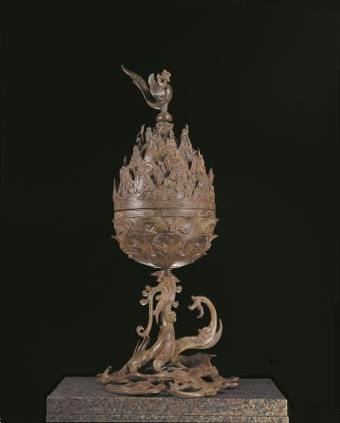
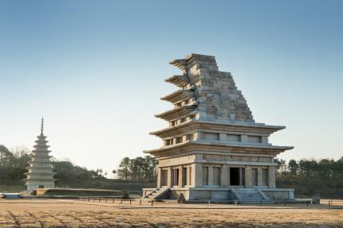
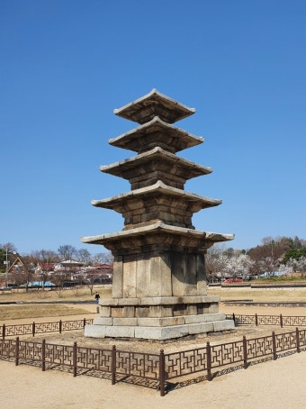
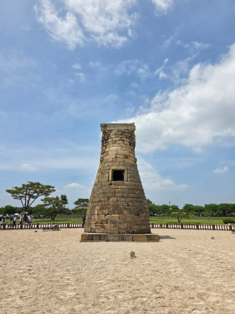
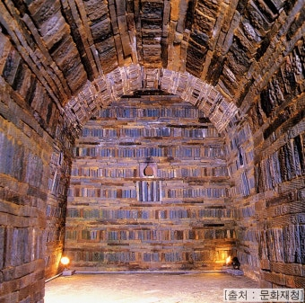
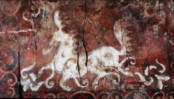
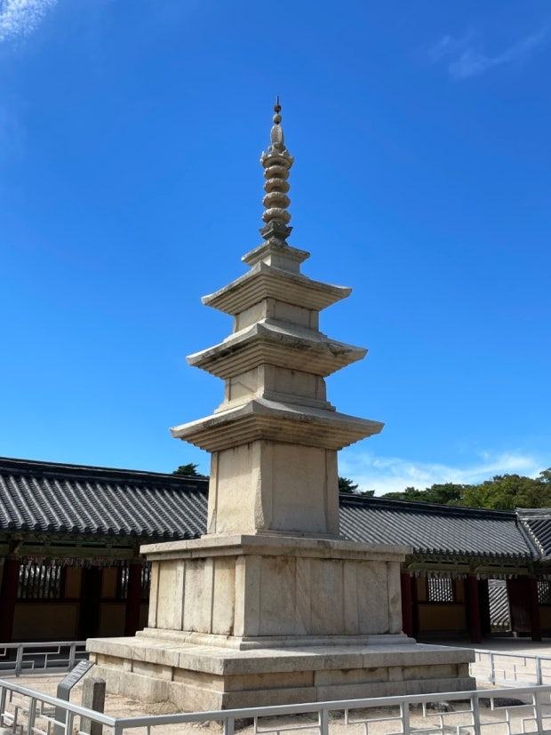
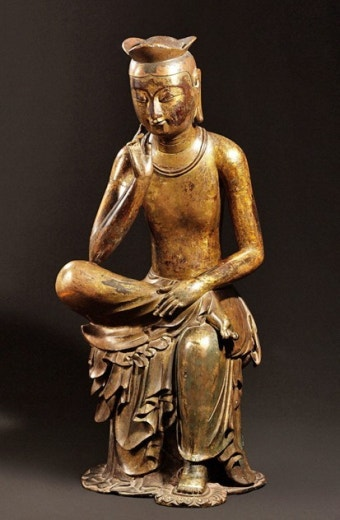

나라 중앙 교육 지방·기타 고구려 태학 (소수림왕)경당 — 문(글)과 무(활쏘기)를 함께 교육백제 기록은 없으나 오경박사·의박사·역박사 존재 사택지적비(도교적 내용), 개로왕의 국서 신라 화랑도의 세속 5계 (원광) 임신서기석 — 두 청년이 유교 경전 학습을 맹세한 기록통일신라 국학 (신문왕) → 태학감(경덕왕)독서삼품과 (원성왕), 최치원 (6두품, 계원필경)발해 주자감 당에 유학생 파견, 빈공과 급제자 배출
정답 포인트 '태학'은 고구려, '국학'은 통일신라, '주자감'은 발해 — 교육 기관 이름만으로 나라를 특정하는 문제가 자주 나옵니다.
고구려 — 『유기』 100권 → 『신집』 5권 (이문진, 영양왕 때 간추림)백제 — 『서기』 (고흥, 근초고왕)신라 — 『국사』 (거칠부, 진흥왕)
정답 포인트 세 나라 모두 중앙 집권 체제가 정비되던 시기 에 역사서를 편찬했습니다 — 왕실의 권위를 높이려는 목적이라는 서술이 함께 나옵니다. 다만 현재 전해지는 책은 하나도 없습니다.
고구려 — 사신도 (강서대묘 등 고분 벽화의 청룡·백호·주작·현무), 연개소문이 도교를 장려해 불교 세력을 견제백제 — 산수무늬 벽돌 (산수문전), 금동 대향로 (도교의 이상 세계와 불교적 요소가 함께 표현됨)신라 — 화랑도의 명칭 '국선·풍류도'에 도교적 요소
정답 포인트 백제 금동 대향로 는 도교 문제와 불교 문제 양쪽에 모두 등장합니다 — "도교와 불교가 함께 반영됐다"는 서술을 기억하세요.
나라 수용 특징 고구려 소수림왕 (전진에서)왕권 강화와 함께 수용 백제 침류왕 (동진에서)일본에 불교 전파(노리사치계) 신라 법흥왕 (이차돈 순교 로 공인)귀족 반발로 수용이 가장 늦음, 업설·미륵불 신앙 이 왕권·화랑과 연결 통일신라 — 원효 (아미타 신앙·불교 대중화), 의상 (화엄·관음), 혜초 (왕오천축국전)신라 말 — 선종 유행 — 참선 중시, 호족과 결탁해 9산 선문 형성
정답 포인트 신라만 불교 수용에 귀족의 반발 이 있었고, 그래서 이차돈의 순교라는 사건이 필요했다는 점이 핵심입니다.
나라 대표 탑 특징 고구려 주로 목탑(현존하지 않음) 돌로 만든 탑이 거의 남아있지 않음 백제 익산 미륵사지 석탑 부여 정림사지 5층 석탑 미륵사지: 현존 最古 석탑, 목탑 양식을 돌로 재현 신라 경주 분황사 모전 석탑 분황사: 돌을 벽돌 모양으로 다듬어 쌓음몽골 침입으로 소실 통일신라 불국사 3층 석탑(석가탑) 석가탑에서 무구정광대다라니경 발견 발해 영광탑 당의 영향을 받은 벽돌탑
정답 포인트 미륵사지 석탑 (현존 最古 석탑)과 무구정광대다라니경 (현존 最古 목판 인쇄물)을 헷갈리지 마세요 — 둘 다 '가장 오래된'이지만 분야가 다릅니다.
나라 초기 후기 대표 고구려 돌무지무덤 굴식 돌방무덤 장군총 (돌무지), 강서대묘·무용총(벽화 있음)백제 돌무지무덤 굴식 돌방무덤벽돌무덤 (웅진기) 서울 석촌동 고분 (고구려와 유사 → 건국 세력 연관 근거)무령왕릉 (벽돌무덤, 중국 남조 양식)신라 돌무지덧널무덤 — 도굴이 어려워 유물이 많이 남음 , 벽화는 없음천마총(천마도), 황남대총 통일신라 굴식 돌방무덤으로 변화, 규모 축소 둘레돌에 12지 신상 조각발해 — 정혜공주 묘 (고구려식 굴식 돌방무덤·모줄임 천장)정효공주 묘 (당식 벽돌무덤 + 고구려 요소)
정답 포인트 신라의 돌무지덧널무덤 은 구조상 도굴이 어려워 껴묻거리가 풍부 하지만 벽화가 없습니다 — "벽화가 발견됐다"는 신라 고분 서술은 오답입니다(천마도는 벽화가 아니라 말다래에 그린 그림).
고구려 — 담징 (종이·먹 제조법, 호류사 금당 벽화), 혜자 (쇼토쿠 태자의 스승)백제 — 아직기 (한자)·왕인 (천자문·논어), 노리사치계 (불경과 불상 전달) — 일본 고대 문화에 가장 큰 영향 신라 — 조선술, 축제술 (제방 쌓는 기술) → '한인의 연못'가야 — 토기 제작 기술 → 일본 스에키 토기 에 영향삼국 문화 전체가 일본 아스카 문화 형성에 기여
정답 포인트 인물-전파 내용 짝짓기가 핵심입니다: 담징=종이·먹 , 왕인=천자문 , 노리사치계=불교 , 가야=스에키 토기 .
사진 파일을 이 페이지와 같은 폴더의 images/ 폴더에 아래 파일명으로 넣으시면 자동으로 채워집니다. 국가유산포털·국립박물관 소장품은 공공누리(KOGL) 자유이용 라이선스 라 별도 허락 없이 쓰실 수 있습니다.

images/geumdong-daehyangno.jpg
백제 금동대향로 국보 287호 · 국립부여박물관국가유산포털에서 보기 →

images/mireuksaji-tap.jpg
익산 미륵사지 석탑 국보 11호 · 현존 最古 석탑국가유산포털에서 보기 →

images/jeongnimsaji-tap.jpg
부여 정림사지 5층 석탑 국보 9호 · 평제탑

images/cheomseongdae.jpg
경주 첨성대 국보 31호 · 선덕여왕

images/muryeongwangneung.jpg
무령왕릉 내부 사적 13호 · 벽돌무덤(전축분)

images/cheonma-do.jpg
천마도 국보 207호 · 천마총 출토(말다래 그림, 벽화 아님)

images/bulguksa-seokgatap.jpg
불국사 3층 석탑(석가탑) 국보 21호 · 무구정광대다라니경 발견 장소

images/bangasayusang.jpg
금동 미륵보살 반가 사유상 국보 78호(또는 83호) · 국립중앙박물관
사진 넣는 법 ① 위 캡션 아래 링크를 눌러 국가유산포털에서 사진을 내려받습니다 ② 이 HTML 파일과 같은 위치에 images 폴더를 만들고 그 안에 표시된 파일명 그대로 저장합니다 ③ 저장만 하면 이 페이지가 자동으로 사진을 불러옵니다. 파일명을 다르게 하시려면, 이 카드의 <img> 태그 속 src 경로를 원하는 이름으로 바꿔주시면 됩니다.
실제 기출 지문은 저작권상 옮기지 않았으며, 반복 출제되는 핵심 사실만 정리했습니다. 굵게 표시하고 밑줄로 강조한 단어가 선지에서 정답을 가르는 핵심 키워드입니다. 표가 화면보다 넓으면 좌우로 밀어서 보실 수 있습니다.
← 이전 신라 말의 동요와 고대 문화 목록
다음 → 고려의 건국과 통치 체제